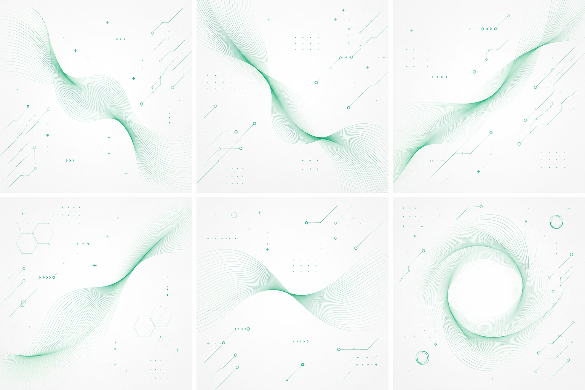

Etapa 16
A FEVA foi construída sobre décadas de pesquisa em psicologia
Combinamos TCC, Inteligência Emocional e neurociência para criar uma jornada que realmente transforma
Revisado por
F
Equipe FEVA
Psicólogos e especialistas em saúde mental